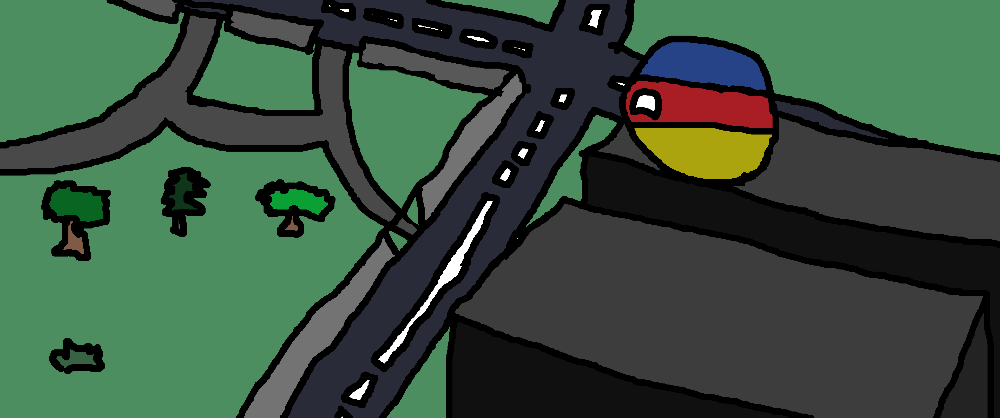

Добро пожаловать на сайт TransylvanYT0917! Здесь ты можешь узнать много чего об TransylvanYT0917 (мне).
Изображение сделанное для логотипа канала

История канала
Появление канала и первое видео
История канала началась 21.10.2021г. и тогда у меня был никнейм "Вiлiкая Трансiльванiя" (я любил и сейчас люблю Трансильванию, а также дореформенный русский язык). Тогда на меня был подписан только Тёма (
@ArtemNaruto) и мой твинк (второй аккаунт; @TransylvanYT1441). Я снимал видосы про флаги и их прошлое. Это не зашло. Через 2 года, (а именно 09.01.2023г.) я снял первый видос, который набрал хайп. Я был в восторге (а как не быть?).
Первые видео и активность
Первые видео и перерыв
Первые видео начали набирать активность в размере 3 тыс. просмотров. Но в мае года я ушёл в отпуск и выпускал видео.
В и после периода летних каникул
Как я ранее сказал, ушёл в отпуск, но всё равно выпустил 2 больших ролика и 3-5 YT Shorts-ов. После летних каникул, я выпустил 2 видео, и...
Небывалый актив
13.10.2023г. я выпустил видос POV-формата, но никто не увидел то, что это был POV-формат. На меня облилось много хэйта со стороны украинцев и американцев, а русские меня заметили. "#нетмамкинымполитикам" писали украинцы, и эти комменты посыпались в мою сторону... Но! Я русский патриот и вам скажу - #ЗaРоссию. Тот видос набрал 8 тыс. просмотров.
Сейчас/на данный момент
Сейчас у меня на Ютубе 46 тыс. просмотров и 101 подписчик. Я планирую снять Смешные Ошибки Windows | Часть 3, и я дошёл до своей цели (100 подписок) за 2 года...
Контент
У меня на канале только РАЗВЛЕКАТЕЛЬНЫЙ/ИСТОРИЧЕСКИЙ КОНТЕНТ! И не надо меня обвинять в том, что вы не увидели надпись "POV:"!
Кто я?
Я, TransylvanYT0917 или TransylvanYT1441 - Женя (Евгений) Девятьяров. Мне 10 лет, мой день рождения 05.04.2013г. (5 апреля 2013г.), а любимое занятие - следить за дискордом и смотерть видосики/Shorts-ы в YouTube.
Истории сотрудничества
Эту историю я помню больше всех... Я уходил из группы, где мы играли. Уходил я из-за того, что оттуда ушёл @Handoun (о нём чуть позже). Я добавил в друзья в дискорд oldniki. Мы начали сотрудничать ещё в начале сентября 2023 года. Мы ссорились и мирились. Сейчас я с ним дружу, но была этакая ситуация, которая развернулась вот так... Я решил подшутить над ним, а ночью он меня снял со стажёра. В итоге - белый мир.
Сотрудничество с FoxMC_2014
Я познакомился с ним через Дискорд-сервер BipedBoot/oldniki. Точной даты начала сотрудничества уже нет. Он ни в чём не помогал мне или oldniki, он просто был. Но как-бы сотрудничество было... В общем, спорно.